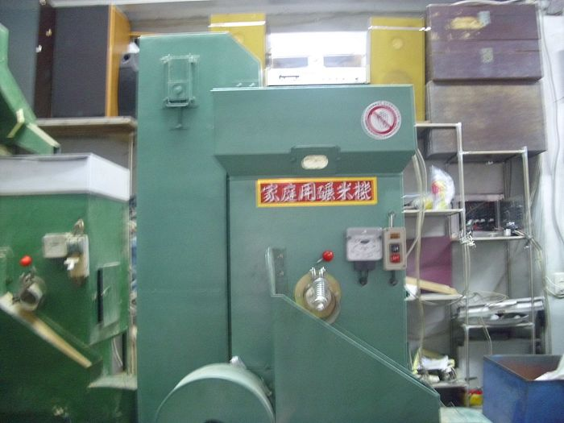
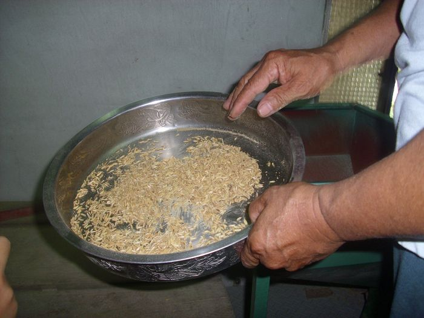
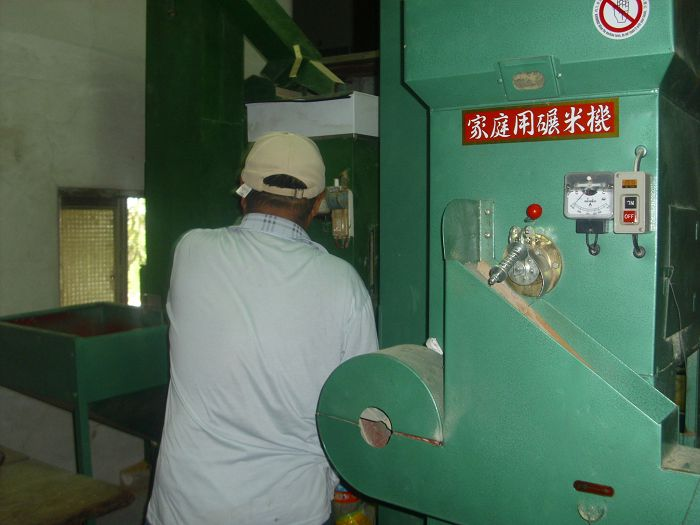
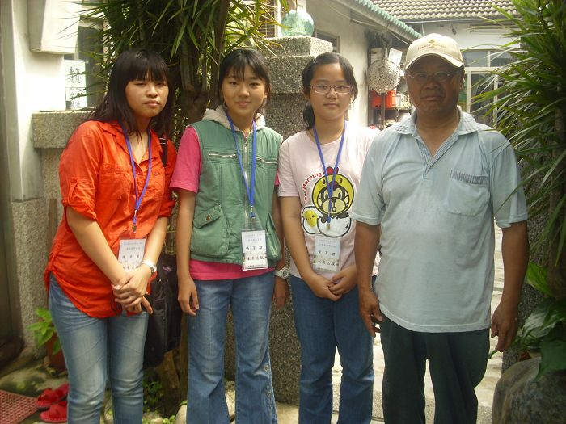
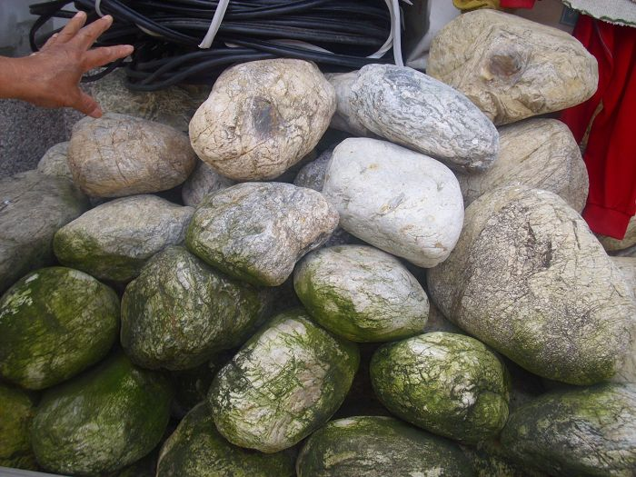
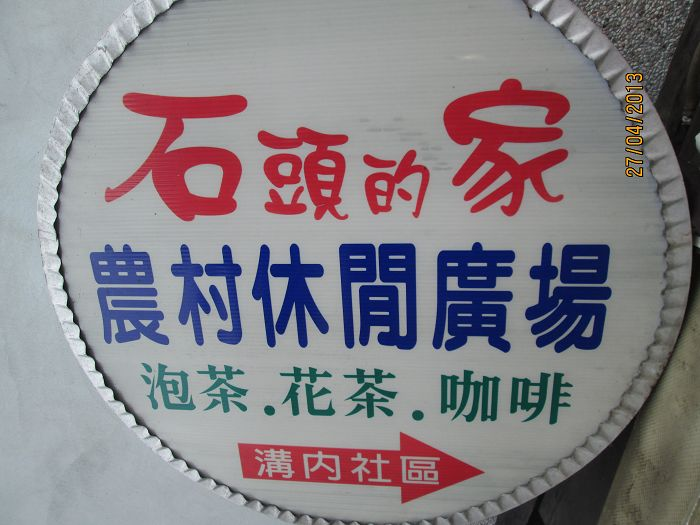
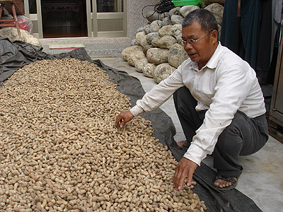
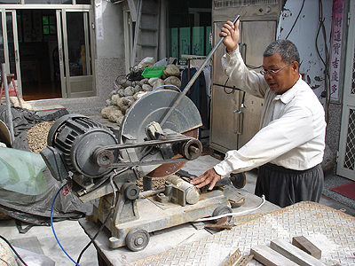

黃棟財先生概述：
黃棟財先生年少時就搬離溝內到外發展，最終人生到了屆退之年放棄一切追逐，回鄉繼續未了的人生，回歸平淡後租借附近閒置的田地做起農夫，夫妻倆胼手胝足享受快意人生。
黃棟財的身材如石頭又喜歡玩玉石，所以有個響亮的外號「石頭仔」。
石頭的家：
由於溝內老家年久失修便花了點錢整修，雖然不是高樓大廈豪宅別墅，但老宅整修後卻更具庭園特色，石頭仔心想如果家裡能夠開放讓遊客能來享茶唱歌多好，既可
廣結善緣又能做點生意讓生活不那麼無聊，因此便在各路口設立廣告招牌，果然各方英雄好漢因為招牌吸引而來，人脈也因此拓展開來，由於熱心公益，村子內大小
事都看的到他的身影，因為他都會來幫忙。
但現在好景不常，因此黃棟材先生收起「石頭的家」，改做起碾米廠。
碾米廠：
早期農業文化中常出現的碾米廠，如今已是鮮少可見，在小小的溝內村中，黃棟財想保存了的早期台灣農業常見的家庭式碾米機，因此才有了碾米機在溝內村出現。
平時，因為碾米廠位居農村中，因此一些農民所耕種的稻穀就會拿來"碾"，也因為吃自己種的米比較安心，所以碾米廠還是相當受歡迎。
玩賞玉石是在彰化市發展時結識了學術界人士，由於學術界人士對於藝術都有偏好，如繪畫、玩石等，因此石頭仔便因此產生對玉石的喜愛，對於玉石的瘋狂不是宅
男在家孤芳自賞，而是很有行動力上山下海與大夥進入深山峽谷撿拾台灣樸玉，從外觀實在很難一窺其價值，但石頭仔卻能分辨出石頭與玉石的差別，真是隔行如隔
山，為了雕琢玉石該有的設備一應俱全，他的願望是有一天將他的玉石能商品藝術化，並開放給人參觀與大眾分享賞玉成果，但願有天能讓他達能願望。
以下為我們詢問的內容 :
Q:為什麼會想用”碾米”當作景點?
A:因為早期農業時期許多稻穀，都會自己碾米自己食用，但現在已不常見了，
所以想發展屬於農家所有的碾米。
Q:碾米廠以前是"石頭的家"，那有什麼石頭是比較特別的嗎?
A:有。我們這裡有很多石頭，是玉石，這裡的石頭屬於礦石，有礦物質的成分，
經過”開窗”後可以發現許多不同的礦物質，顏色不同，很好看。
 |
 |
 |

這些圖片為老闆示範碾米的方式及過程，以及右下角這張圖片，大家笑得多燦爛阿!! |

這些翠綠的石頭就是老闆口中的玉石 |

原為石頭的家，現在改為碾米廠。 |
 |
 |
<--回溝內村首頁
|